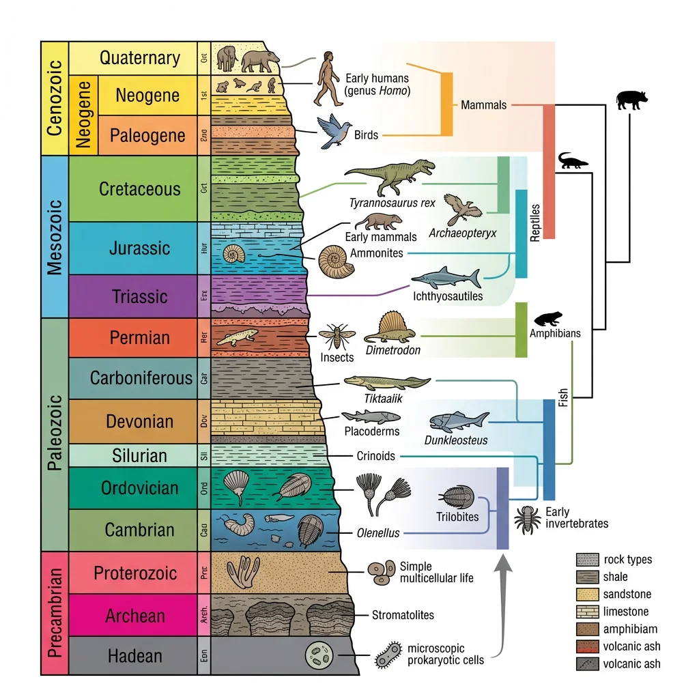
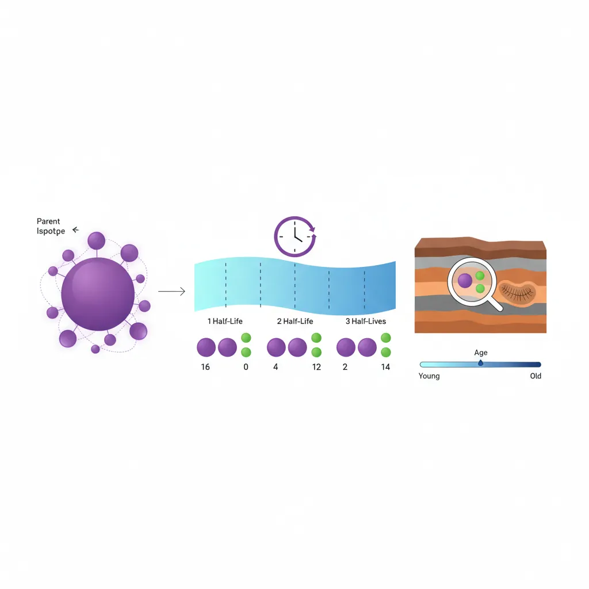
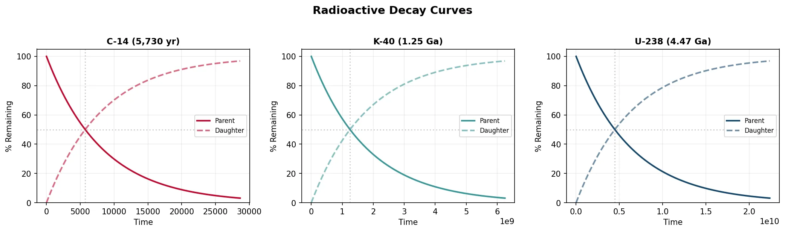
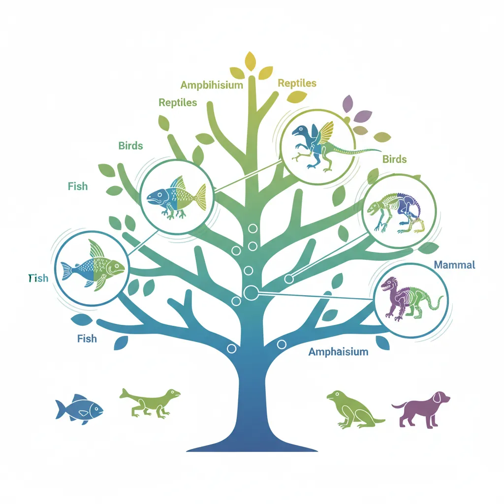
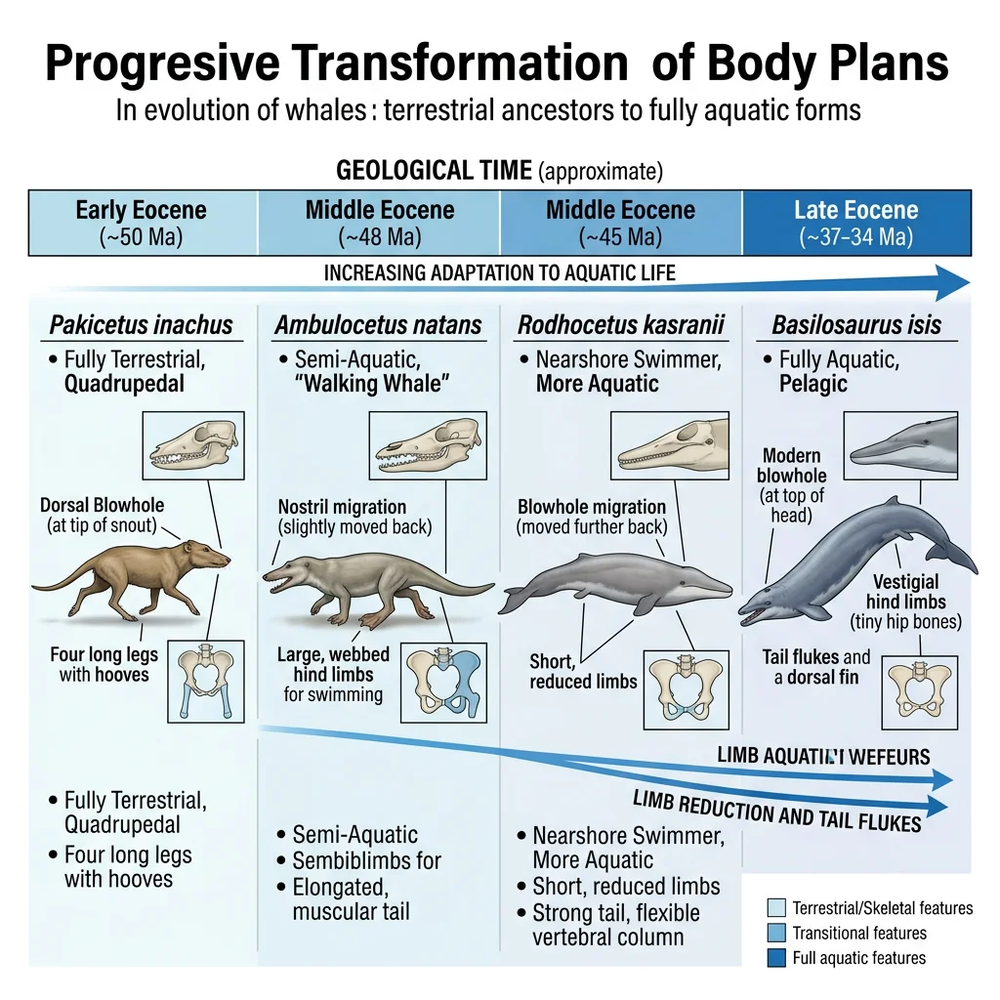
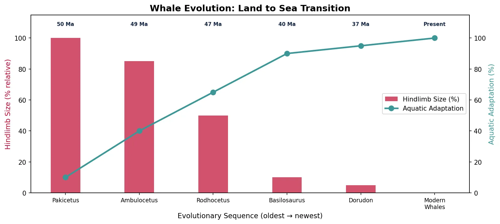
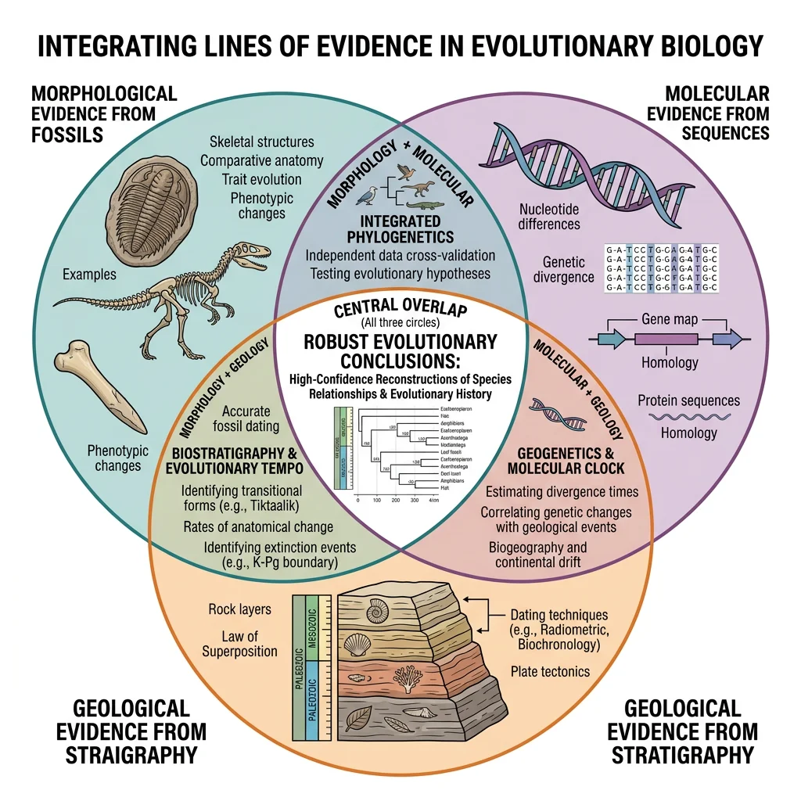
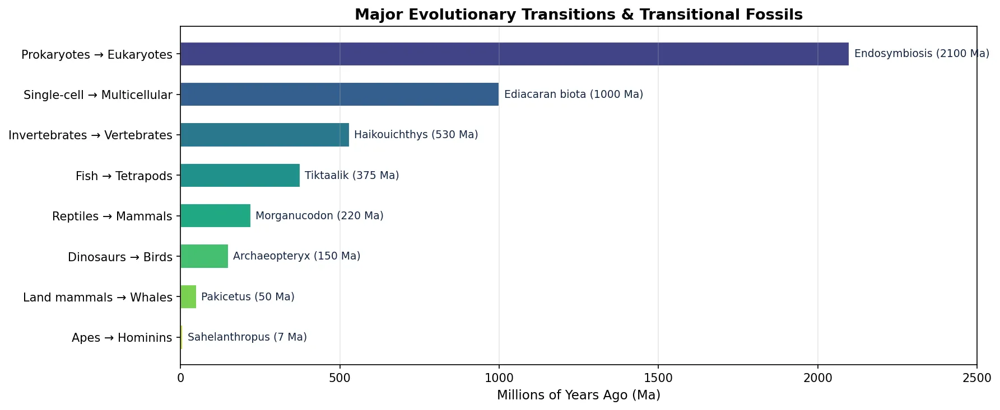

Evolutionary Biology Mastery
Darwin, Wallace & Natural Selection
Foundations, selection types, inclusive fitness, trade-offsGenetics of Evolution
DNA, population genetics, Hardy-Weinberg, molecular clocksSpeciation & Adaptive Radiation
Species concepts, reproductive isolation, rapid diversificationPhylogenetics & Taxonomy
Tree thinking, cladistics, molecular phylogenetics, classificationHuman Evolution & Migration
Hominin lineage, fossil evidence, Neanderthals, cultural evolutionCo-evolution & Symbiosis
Arms races, host-parasite, endosymbiosis, holobiontMass Extinctions & Biodiversity
Big Five extinctions, biodiversity patterns, conservationEvolutionary Developmental Biology
Hox genes, morphological innovation, heterochronyBehavioral & Social Evolution
Cooperation, game theory, sexual strategies, social insectsMathematical & Theoretical Evolution
Fitness landscapes, adaptive dynamics, ESS, selection modelsPaleontology & Fossil Interpretation
Radiometric dating, transitional fossils, taphonomyEvolutionary Genomics
Comparative genomics, gene duplication, HGT, epigeneticsThe Fossil Record
The fossil record is evolution's physical archive — preserved remains and traces of organisms that once lived. While incomplete (most organisms decompose without a trace), the fossils we do have provide direct evidence of life's history spanning 3.5 billion years.

Fossilization Processes
Fossilization is extraordinarily rare. An organism must avoid scavenging, bacterial decay, and mechanical destruction, then be buried rapidly in sediment. The main processes are:
| Process | How It Works | Example |
|---|---|---|
| Permineralization | Minerals (silica, calcite, pyrite) fill pores in bone/wood, preserving microscopic detail | Petrified Forest, Arizona |
| Replacement | Original material dissolved molecule-by-molecule and replaced with different mineral | Pyritized ammonites |
| Compression | Organism flattened between sediment layers, leaving carbon film or impression | Fern leaf impressions |
| Mold & Cast | Organism dissolves leaving a cavity (mold); cavity fills with mineral (cast) | Clam shell casts |
| Amber Preservation | Organism trapped in tree resin; dehydration prevents decay | Insects in Baltic amber |
| Frozen Preservation | Entire organism preserved in permafrost with soft tissues intact | Woolly mammoth Yuka |
Taphonomy
Taphonomy (Greek: taphos = burial, nomos = law) is the study of everything that happens to an organism between death and discovery. Understanding taphonomy is essential because it reveals the biases in the fossil record:
- Preservation bias — hard parts (bones, shells, teeth) fossilize far more readily than soft tissues (muscles, skin, organs)
- Habitat bias — organisms near water (lakes, rivers, oceans) are much more likely to be buried by sediment than land-dwelling species
- Temporal bias — younger rocks are more abundant at the surface than older rocks, so recent fossils are over-represented
- Body size bias — larger organisms produce more discoverable fossils than microscopic ones
- Collection bias — paleontologists tend to search in accessible, well-exposed outcrops in politically stable regions
Types of Fossils
- Body fossils — actual remains of organisms: bones, shells, teeth, leaves, seeds
- Trace fossils (ichnofossils) — evidence of activity: footprints, burrows, coprolites (fossilized faeces), tooth marks
- Chemical fossils (biomarkers) — molecular signatures preserved in rock: steranes (from sterols), hopanoids (from bacterial membranes)
- Microfossils — microscopic remains: foraminifera, diatoms, pollen grains, stromatolites
Oldest Fossils — Apex Chert Microfossils (3.465 Ga)
William Schopf described microfossils from the Apex Chert in Western Australia that appeared to be 3.465 billion years old — the oldest evidence of life on Earth. These filamentous structures were interpreted as photosynthetic cyanobacteria. While their biogenicity has been debated (some argue they are mineral artefacts), subsequent studies using SIMS (secondary ion mass spectrometry) confirmed that the carbon in these structures has an isotopic signature consistent with biological metabolism. If confirmed, life began within the first billion years of Earth's existence — suggesting that the origin of life may be a relatively "easy" process given the right conditions.
Dating Methods
Determining when organisms lived is as important as knowing what they looked like. Dating methods fall into two categories: relative dating (determining which is older) and absolute dating (assigning a numerical age in years).

Radiometric Dating
Radiometric dating exploits the predictable decay of radioactive isotopes. A "parent" isotope decays into a "daughter" isotope at a constant rate described by its half-life — the time for half the parent atoms to decay:
N₀ = initial number of parent atoms, N(t) = remaining parent atoms after time t, t½ = half-life.
By measuring the ratio of parent to daughter isotopes in a mineral crystal that formed in igneous rock, we can calculate when that crystal solidified.
| Method | Parent → Daughter | Half-Life | Useful Range | Best For |
|---|---|---|---|---|
| C-14 | ¹⁴C → ¹⁴N | 5,730 yrs | 0–50,000 yrs | Recent organic material |
| K-Ar | ⁴⁰K → ⁴⁰Ar | 1.25 Ga | 100,000 yrs – 4.6 Ga | Volcanic rocks |
| U-Pb | ²³⁸U → ²⁰⁶Pb | 4.47 Ga | 1 Ma – 4.6 Ga | Zircon crystals (very precise) |
| Ar-Ar | ⁴⁰Ar/³⁹Ar ratio | 1.25 Ga | 10,000 yrs – 4.6 Ga | Volcanic ash (single crystal) |
| Rb-Sr | ⁸⁷Rb → ⁸⁷Sr | 48.8 Ga | >10 Ma | Old igneous/metamorphic rocks |
import numpy as np
import matplotlib.pyplot as plt
# Radioactive Decay Curves for common isotopes
half_lives = {
'C-14 (5,730 yr)': 5730,
'K-40 (1.25 Ga)': 1.25e9,
'U-238 (4.47 Ga)': 4.47e9
}
fig, axes = plt.subplots(1, 3, figsize=(14, 4))
colors = ['#BF092F', '#3B9797', '#16476A']
for ax, (label, t_half), color in zip(axes, half_lives.items(), colors):
t_max = t_half * 5
t = np.linspace(0, t_max, 500)
parent = 100 * (0.5) ** (t / t_half)
daughter = 100 - parent
ax.plot(t, parent, color=color, linewidth=2, label='Parent')
ax.plot(t, daughter, color=color, linewidth=2, linestyle='--', alpha=0.6, label='Daughter')
ax.axhline(y=50, color='gray', linestyle=':', alpha=0.4)
ax.axvline(x=t_half, color='gray', linestyle=':', alpha=0.4)
ax.set_title(label, fontsize=11, fontweight='bold')
ax.set_xlabel('Time')
ax.set_ylabel('% Remaining')
ax.legend(fontsize=8)
ax.set_ylim(0, 105)
ax.grid(alpha=0.2)
plt.suptitle('Radioactive Decay Curves', fontsize=14, fontweight='bold', y=1.02)
plt.tight_layout()
plt.show()

Biostratigraphy
Biostratigraphy uses the distribution of fossils in rock layers to correlate strata across different geographic locations. The principle is simple: if two rock outcrops on different continents contain the same distinctive fossil species, those layers were deposited at roughly the same time.
- Principle of Faunal Succession (William Smith, 1799) — fossil species succeed one another in a definite, recognisable order; each time period has its own characteristic assemblage
- First and Last Appearance Datum (FAD/LAD) — the biostratigraphic range of a species is defined by when it first appears and when it disappears from the record
- Biozones — intervals of rock defined by the presence of a particular fossil taxon or assemblage
William Smith — The Map That Changed the World
William Smith, a self-taught English canal surveyor, produced the first geological map of an entire country (England, Wales, and part of Scotland) in 1815. His key insight was that the same succession of fossils appeared in the same order wherever he looked — different rock layers contained different, characteristic species. This "principle of faunal succession" allowed him to correlate strata across hundreds of miles, predict what fossils would be found at depth, and establish the foundations of stratigraphy as a science. Smith's work predated Darwin by 44 years, yet it demonstrated that life had changed systematically over time.
Index Fossils
Index fossils (also called guide fossils) are species that are particularly useful for dating and correlating rock layers. The ideal index fossil has four properties:
- Wide geographic distribution — found on multiple continents
- Narrow temporal range — existed for a short geological period, making it a precise time marker
- Abundant — common enough to be found reliably
- Easily identifiable — distinctive morphology that prevents confusion
| Index Fossil | Time Period | Why Useful |
|---|---|---|
| Trilobites | Cambrian – Permian (521–252 Ma) | Rapid evolution created many short-lived species; enormous diversity |
| Ammonites | Devonian – Cretaceous (409–66 Ma) | Widespread marine; rapidly evolving shell morphology |
| Foraminifera | Cambrian – Present | Microscopic; abundant in marine sediments; species turn over quickly |
| Graptolites | Ordovician – Devonian (485–359 Ma) | Planktonic = global distribution; distinctive colony shapes |
| Conodonts | Cambrian – Triassic (500–200 Ma) | Tiny tooth-like elements; abundant; rapid species turnover |
Key Transitional Fossils
Transitional fossils are species that display features intermediate between an ancestral group and its descendant group. They document major evolutionary transitions — the "in-between" stages that show how fins became limbs, how scales became feathers, and how land mammals returned to the sea.

Tiktaalik — Fish to Tetrapod
Tiktaalik roseae (375 Ma, Late Devonian) bridges the gap between lobe-finned fish and early tetrapods. It was discovered in 2004 by Neil Shubin's team in the Canadian Arctic — found in rocks of exactly the predicted age and environment based on evolutionary theory.
Tiktaalik roseae — "Your Inner Fish"
Neil Shubin predicted where to find the fish-tetrapod transitional form. The team knew that fully aquatic lobe-finned fish existed at ~385 Ma and that the earliest tetrapods appeared at ~365 Ma. They needed exposed Devonian sedimentary rock (~375 Ma) deposited in a shallow freshwater environment. Ellesmere Island in Arctic Canada fit perfectly. After five years of expeditions, they found Tiktaalik — an animal with a fish body, scales, and gills, but also a flattened head, a neck (fish lack necks), proto-wrist joints in its fins, and ribs capable of supporting its weight. It could "do push-ups" on the bottom of shallow streams. This discovery exemplifies the predictive power of evolutionary theory.
| Feature | Lobe-Finned Fish | Tiktaalik | Early Tetrapods |
|---|---|---|---|
| Head | Rounded, connected to shoulder | Flat, mobile neck | Flat, mobile neck |
| Fins/Limbs | Fins with internal skeleton | Fin-limbs with wrist bones | Digits (fingers/toes) |
| Ribs | Small, not weight-bearing | Large, overlapping | Robust, support trunk |
| Breathing | Gills only | Gills + primitive lungs | Lungs (gills reduced/lost) |
| Body covering | Scales | Scales | Variable (some scales remain) |
Archaeopteryx — Dinosaur to Bird
Archaeopteryx lithographica (150 Ma, Late Jurassic) was discovered in 1861 — just two years after Darwin published On the Origin of Species. It remains one of the most famous fossils in the world.
- Dinosaur features: teeth (birds lack teeth), bony tail, clawed fingers, no keeled sternum
- Bird features: feathers (asymmetric flight feathers), wishbone (furcula), partially reversed hallux (perching toe)
- Intermediate features: unreduced fingers, shallow keel, semi-lunate carpal (wrist bone for wing folding)
Whale Evolution Series
The evolution of whales from land-dwelling mammals is documented by one of the most complete transitional fossil series in the entire record. Over ~15 million years, wolf-sized terrestrial artiodactyls evolved into fully aquatic cetaceans:

| Genus | Age | Habitat | Key Features |
|---|---|---|---|
| Pakicetus | ~50 Ma | Terrestrial/wading | Dense ear bones (like cetaceans); legs for running |
| Ambulocetus | ~49 Ma | Amphibious (crocodile-like) | Large hind limbs for swimming and walking; long snout |
| Rodhocetus | ~47 Ma | Nearshore marine | Reduced hind limbs; modified sacrum; ocean-going |
| Basilosaurus | ~40 Ma | Fully aquatic | Elongated body; tiny vestigial hind legs; fluked tail |
| Dorudon | ~37 Ma | Fully aquatic | Modern whale body plan; vestigial pelvis/femur |
The "Walking Whale" — Pakicetus to Basilosaurus
Philip Gingerich's decades of fieldwork in Pakistan revealed the stunning transition sequence from land to sea. Each successive genus shows progressive reduction of hind limbs, modification of the pelvis for swimming, elongation of the body, and migration of the nostrils from the snout tip to the top of the head (forming the blowhole). Molecular phylogenetics independently confirmed that cetaceans' closest living relatives are hippopotamuses — a prediction that morphological data alone could not have made, since the linking fossils had not yet been found. This convergence of fossil and molecular evidence is one of the strongest confirmations of evolutionary theory.
import numpy as np
import matplotlib.pyplot as plt
# Whale Evolution Timeline — hindlimb reduction and aquatic adaptation
genera = ['Pakicetus', 'Ambulocetus', 'Rodhocetus', 'Basilosaurus', 'Dorudon', 'Modern\nWhales']
ages = [50, 49, 47, 40, 37, 0]
hindlimb_size = [100, 85, 50, 10, 5, 0] # % relative to body size
aquatic_index = [10, 40, 65, 90, 95, 100] # % aquatic adaptation
fig, ax1 = plt.subplots(figsize=(11, 5))
x = range(len(genera))
ax1.bar(x, hindlimb_size, color='#BF092F', alpha=0.7, width=0.4, label='Hindlimb Size (%)')
ax1.set_ylabel('Hindlimb Size (% relative)', fontsize=11, color='#BF092F')
ax1.set_ylim(0, 115)
ax2 = ax1.twinx()
ax2.plot(x, aquatic_index, 'o-', color='#3B9797', linewidth=2.5, markersize=8, label='Aquatic Adaptation')
ax2.set_ylabel('Aquatic Adaptation (%)', fontsize=11, color='#3B9797')
ax2.set_ylim(0, 115)
ax1.set_xticks(x)
ax1.set_xticklabels(genera, fontsize=9)
ax1.set_xlabel('Evolutionary Sequence (oldest → newest)', fontsize=11)
# Add age labels
for i, age in enumerate(ages):
label = f'{age} Ma' if age > 0 else 'Present'
ax1.text(i, 108, label, ha='center', fontsize=8, color='#132440', fontweight='bold')
lines1, labels1 = ax1.get_legend_handles_labels()
lines2, labels2 = ax2.get_legend_handles_labels()
ax1.legend(lines1 + lines2, labels1 + labels2, loc='center right')
plt.title('Whale Evolution: Land to Sea Transition', fontsize=14, fontweight='bold')
plt.tight_layout()
plt.show()

Integrating Evidence
Modern paleontology rarely relies on fossils alone. The most powerful insights come from integrating morphological, molecular, and geological data — using each type of evidence to test and refine conclusions drawn from the others.

Molecular vs Morphological Data
Molecular phylogenetics (DNA/protein sequences) and morphological analysis (anatomical characters) sometimes agree — and sometimes conflict. These conflicts are scientifically productive because they highlight hidden convergent evolution or incomplete fossil sampling:
| Case | Morphology Said | Molecules Said | Resolution |
|---|---|---|---|
| Whale relatives | Mesonychids (wolf-like carnivores) | Hippos (artiodactyls) | Molecules correct; ankle bones confirmed hippo link |
| Guinea pigs | Rodents | Not rodents (early study) | Morphology correct; molecular error from long-branch attraction |
| Turtles | Basal reptiles (anapsids) | Related to archosaurs (crocs, birds) | Molecules correct; skull morphology convergent |
| Aardvarks | Related to anteaters | Afrotheria (elephants, manatees) | Molecules correct; ant-eating is convergent |
Calibrating Molecular Clocks
Molecular clocks estimate divergence times by counting DNA differences between species and applying a mutation rate. But these clocks must be calibrated using fossil constraints:
- Minimum divergence date — the oldest fossil of a lineage provides a minimum age for its origin (it must be at least that old)
- Maximum divergence date — harder to establish; uses the absence of fossils in well-sampled older strata
- Relaxed clocks — modern methods allow the rate to vary across branches (rates differ between rodents and elephants, for example)
Trace Fossils & Behavior
Trace fossils (ichnofossils) preserve behavior rather than anatomy — providing a window into how extinct organisms actually lived:
- Trackways — footprint sequences revealing gait, speed, group behaviour (e.g., Laetoli hominid footprints, 3.6 Ma — bipedal walking)
- Burrows — dwelling, feeding, or escape structures; reveal soft-bodied organisms rarely preserved as body fossils
- Coprolites — fossilised faeces revealing diet; some contain seeds, bones, parasites, or even DNA
- Bite marks — evidence of predation; Tyrannosaurus bite marks on Triceratops frills confirm predator-prey interactions
- Nests & eggs — brooding behaviour in dinosaurs (e.g., Oviraptor sitting on nest like a bird)
Laetoli Footprints — Walking Upright 3.6 Million Years Ago
In 1978, Mary Leakey's team discovered a 27-metre trail of hominid footprints preserved in volcanic ash at Laetoli, Tanzania. The prints, dated to 3.6 Ma, show two (possibly three) individuals walking upright with a modern human-like gait — no knuckle-dragging, no divergent big toe. This trace fossil proved that bipedalism preceded large brains in human evolution. The individuals were likely Australopithecus afarensis (the same species as Lucy). They walked through wet volcanic ash from the Sadiman volcano, which hardened before the next eruption buried and preserved it — a fortuitous combination of events that captured a moment in deep time.
import numpy as np
import matplotlib.pyplot as plt
# Major Evolutionary Transitions — timeline with transitional fossils
transitions = [
('Prokaryotes → Eukaryotes', 2100, 'Endosymbiosis'),
('Single-cell → Multicellular', 1000, 'Ediacaran biota'),
('Invertebrates → Vertebrates', 530, 'Haikouichthys'),
('Fish → Tetrapods', 375, 'Tiktaalik'),
('Reptiles → Mammals', 220, 'Morganucodon'),
('Dinosaurs → Birds', 150, 'Archaeopteryx'),
('Land mammals → Whales', 50, 'Pakicetus'),
('Apes → Hominins', 7, 'Sahelanthropus'),
]
names = [t[0] for t in transitions]
ages = [t[1] for t in transitions]
fossils = [t[2] for t in transitions]
fig, ax = plt.subplots(figsize=(12, 5))
colors = plt.cm.viridis(np.linspace(0.2, 0.9, len(transitions)))
bars = ax.barh(range(len(names)), ages, color=colors, edgecolor='white', height=0.6)
for i, (bar, fossil) in enumerate(zip(bars, fossils)):
ax.text(bar.get_width() + 15, i, f'{fossil} ({ages[i]} Ma)',
va='center', fontsize=9, color='#132440')
ax.set_yticks(range(len(names)))
ax.set_yticklabels(names, fontsize=10)
ax.set_xlabel('Millions of Years Ago (Ma)', fontsize=11)
ax.set_title('Major Evolutionary Transitions & Transitional Fossils',
fontsize=13, fontweight='bold')
ax.invert_yaxis()
ax.set_xlim(0, 2500)
ax.grid(axis='x', alpha=0.3)
plt.tight_layout()
plt.show()

Exercises
Exercise 1: Index Fossil Identification
A rock outcrop in Morocco contains abundant ammonite fossils. A different outcrop in England, 2,000 km away, contains the same ammonite species. What can you conclude about the age of these two rock layers? What four properties make ammonites good index fossils?
Show Answer
The two rock layers were deposited at approximately the same time (same biostratigraphic zone). Ammonites are excellent index fossils because: (1) Wide geographic distribution — they were marine and found globally; (2) Narrow temporal range — individual species lived for relatively short periods (often 1–5 million years); (3) Abundant — extremely common in marine sediments; (4) Easily identifiable — distinctive coiled shell shapes with unique suture patterns (septal lines) that differ between species.
Exercise 2: Transitional Features
Examine the Tiktaalik comparison table above. List three features that are (a) inherited from its fish ancestry and (b) foreshadow the tetrapod body plan. Why does the combination of these features make Tiktaalik an important transitional fossil?
Show Answer
(a) Fish features: Scales, gills, fin rays (it still has fins, not legs). (b) Tetrapod foreshadowing: Flat head (not rounded like fish), mobile neck (fish heads are fused to shoulders), wrist-like joint bones in fins allowing weight-bearing, large overlapping ribs (can support body when out of water). Why important: Tiktaalik demonstrates that the fish-to-tetrapod transition was not a sudden leap but a gradual mosaic of changes. It was predicted to exist in ~375 Ma freshwater environments, found exactly where predicted — showing evolution makes testable, falsifiable predictions.
Exercise 3: Dating Methods Application
A paleontologist discovers a dinosaur bone sandwiched between two volcanic ash layers. The lower ash is dated at 72 Ma (K-Ar) and the upper ash at 68 Ma (K-Ar). Can the bone itself be dated with C-14? Why or why not? What is the best age estimate for the dinosaur?
Show Answer
C-14 dating is NOT applicable — radiocarbon's half-life is only 5,730 years, making it useful only for materials younger than ~50,000 years. At 68–72 Ma, virtually all ¹⁴C atoms have decayed to ¹⁴N, leaving nothing to measure. Best age estimate: the dinosaur lived between 72 and 68 Ma (bracketed by the two ash layers). The exact age within that 4-million-year window cannot be determined without additional constraints. If the bone was found closer to the lower ash, the age is closer to 72 Ma. This "bracketing" approach is the standard method for dating fossils in sedimentary rock.
Paleontology Worksheet
Use this worksheet to document your study of paleontological evidence and fossil interpretation. Download as Word, Excel, or PDF.
Fossil Interpretation Analysis
Record your fossil analysis findings. Download as Word, Excel, or PDF.
Conclusion & Next Steps
Paleontology transforms evolution from a theoretical framework into a physical, observable record. Fossilization preserves snapshots of ancient life; radiometric dating and biostratigraphy place them in time; and transitional fossils like Tiktaalik, Archaeopteryx, and the whale series document major evolutionary transitions step by step. The integration of fossil evidence with molecular data creates a mutually reinforcing web of evidence that is far stronger than either approach alone.
Every new fossil discovery adds detail to our understanding of life's history — and every prediction confirmed (like finding Tiktaalik in exactly the right rocks) strengthens our confidence in evolutionary theory's explanatory and predictive power.